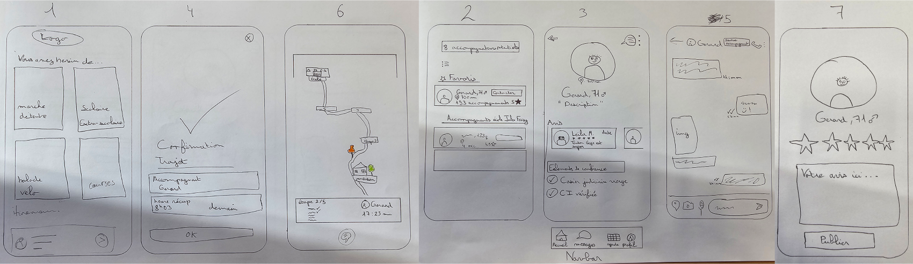

Pourquoi cette idée ?

La sédentarité touche de plus en plus d'adultes et d'enfants, les activités physiques diminuent, tandis que la pollution croissante de nos villes appelle à une transition vers des modes de transport plus doux et plus responsables. Ces deux thématiques nous ont semblé constituer un bon point de départ pour développer une reflexion autour du développement de la mobilité douce dans le but de maintenir la santé de la population. Nous avons décidé de nous concentrer sur les milieu urbain et plus particulièrement la ville de Saint-Etienne. Notre concept est destiné au
À qui est destiné notre application ?
Nos recherches ont mis en évidence une réelle tendance à la sédentarité chez les enfants et les adolescents :
37%
Des enfants de 6 à 10 ans n'atteignent pas les recommandations de 60 minutes d'activité physique par jour. --sante.gouv.fr/
39%
Des enfants ne pratiquent jamais de jeux en plein air les jours d'école. --santepubliquefrance.fr/
50%
Des enfants sont amenés à l’école en voiture --santepubliquefrance.fr/
Nous avons donc pour le moment décidé de nous concentrer sur les enfants des parents qui veulent que leurs enfants seuls, ou en groupe, se fassent accompagner par un adulte fiable et en toute sécurité.
Pour nous guider dans notre conception nous avons choisis d’imaginer le persona suivant :
Autres persona imaginés mais écartés afin de se concentrer sur le public des parents et des enfants :
Notre problématique
Comment aider Louis à trouver un accompagnant lors des déplacements de mobilité douce de sa fille afin qu’il soit rassuré ?
Notre solution
Une application mobile aidant les parents à trouver un accompagnant lors des déplacements de mobilité douce de leurs enfants.
- Une liste d’accompagnants de confiance
- La possibilité de filtrer les trajets en fonction de nos exigences
- Un espace de messagerie pour échanger entre parents etaccompagnants
- Une suivi du trajet de l’enfant en temps réel
Userflow

Etapes de conception
Low Fi
Mid Fi

Messagerie

Profil

Suivi du trajet

Réserver un trajet
High Fi

Messagerie

Réserver un trajet

Profil

Suivi du trajet
Prototype
Retours de test utilisateurs
La majorité des utilisateurs ont compris la fonctionnalité de l’application, ils ont dit que l’application est intuitif et facile d’utilisation.
De plus, ils recommandent fortement l’application et ont attesté vouloir utiliser l’application lorsqu’il seront en mesure de pouvoir l’utiliser. Cependant au niveau de l’accueil, il y a eu une certaine incompréhension des boutons à appuyer et, qui est dû au fait que lire la description après le titre n’est pas intuitif pour un utilisateur, il a donc été modifié.
- Lors de notre test utilisateur, une personne n’a pas réussi à bien comprendre ce qu’il fallait faire, on s’est rendu compte qu’il s’agit au moment de la notification de la réception du message de l’accompagnant qui était trop petit et donc on a voulu faire une notification type iPhone qui est plus intuitif et facile de compréhension.
Avant
Aprés
- Au niveau de l’écran d’accueil, nous n’avions pas rajouté la fonctionnalité de réservation temporaire, pour que ce soit plus facile de compréhension, nous avons décidé de rajouter un bouton permettant directement de confirmer la réservation directement de l’accueil.
Avant
Après
- Durant la phase des messages, l’affichage des boutons n’était pas assez compréhensible, nous avons décidé de l’agrandir, de centrer les boutons, de rajouter un aperçu du trajet sous forme d’une mini carte et d’y mettre une petite animation afin qu’elle soit plus facile de compréhension.
Avant
Après
Future mise à jour
Afin de proposer un services toujours plus proche de nos utilisateurs, nous avons envisagé des futurs fonctionnalités :
3 grandes nouvelles fonctionnalités seront ajouté :
- La marche détente qui consistera à pouvoir se promener en binôme ou en groupe avec d’autres personnes grâce au site. Ils pourront être filtrés en fonction des exigences des différents utilisateurs (sous forme de tag)
- La balade à vélo qui suit le même principe que la marche détente mais avec une mobilité douce différente, ici le vélo
- Les courses qui consiste à accompagner une personne en incapacité de pouvoir faire ses courses seuls, cela peut cible les personnes âgés comme les personnes à mobilité réduites ou éventuellement les personnes possédant une maladie non visible
1 nouvelle fonctionnalité secondaire sera ajouté dans la catégorie pédibus :
- La fonctionnalité “Réserver un trajet” qui consiste à pouvoir effectuer des trajets extra-scolaire avec le même principe que les trajets scolaires en terme de cheminement.
- Suite à l’ajout de certaines fonctionnalités principales, certaines document supplémentaires pourront être demandé en plus comme le bac pro ASSP ou d’autres certification de service à la personnes afin de rassurer les utilisateurs lors de l’utilisation d’un ou plusieurs de nos services.
- Suite à l’ajout de certaines fonctionnalités principales et secondaire, il y aura la possibilité de mettre en favoris les accompagnateur et ils seront visible dans l’écran d’accueil des fonctionnalités pédibus (trajets scolaires et extra scolaires) et les courses pour qu’ils soient plus facile d’accès.